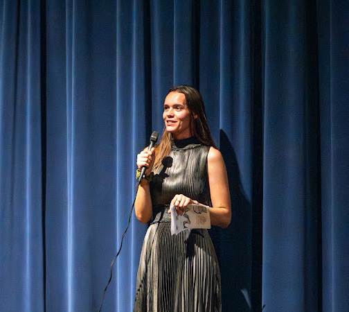

About The instructor

For Emma Poland, dance is not just a passion, but a way of life. With 20 years of
experience in dance and nearly 10 years experience teaching dance, Emma has always
believed in the transformative power of movement. From their first dance class to the many
stages they’ve graced, dance has taught them lessons in perseverance, self-expression, and
the beauty of vulnerability.
As an instructor, Emma strives to create a space where every student feels seen, valued, and
inspired. Whether it’s a beginner learning their first steps or an advanced dancer refining their
technique, Emma works to nurture each individual’s unique journey, reminding them that every
misstep is part of the process, and every moment of growth is worth celebrating.
What drives Emma most is the joy that comes from watching students build confidence, not just
in their dance, but in themselves. Dance, to Emma, is about more than mastering a routine—it’s
about finding your voice, connecting with others, and discovering the strength you didn’t know
you had.
Outside the studio,Emma continues to explore the world of dance, learning from every
opportunity and every person they meet. With a heart full of gratitude, they are excited to share
their love for movement, inspire creativity, and help students grow both as dancers and as
individuals.
I believe in fostering a love for dance while emphasizing technical precision and creativity. My
approach involves a non judgmental supportive space, creating and growing confidence, and
personal accountability. I aim to inspire my students to challenge themselves and explore their
own artistic expression.